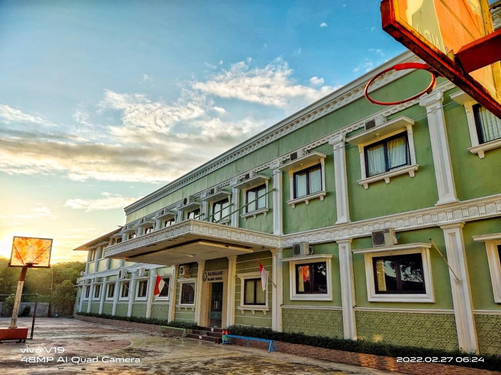

Rabbani Islamic School CIkarang Resmi Buka Tahun Ajaran Baru 2025/2026
Uwais Abdullah - Pendidikan
Jum'at, 15 AUG 2025 2:50 WIB
Bekasi - Rabbani Islamic School adalah sebuah institusi pendidikan terpadu yang berkomitmen untuk mencetak generasi unggul dengan memadukan kurikulum nasional yang berkualitas dengan nilai-nilai dan ajaran Islam. Sekolah ini berfokus pada pengembangan akademik, pembentukan karakter, dan penguasaan keterampilan hidup, memastikan setiap siswa tumbuh menjadi individu yang cerdas, berakhlak mulia, dan siap menghadapi tantangan global.
Baca Juga : Rapuk